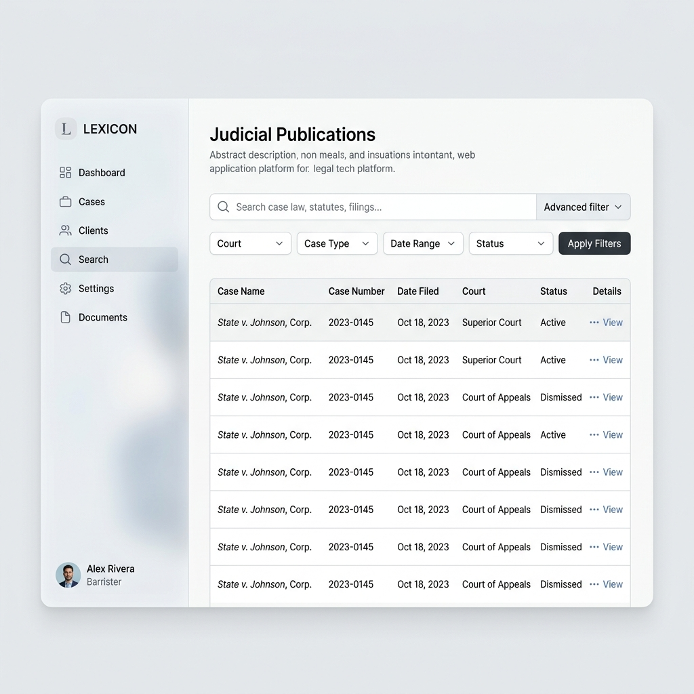
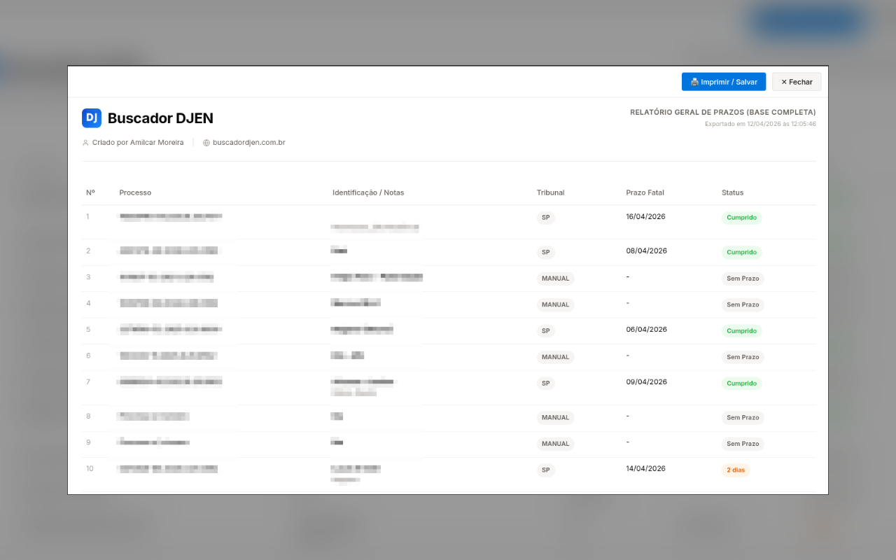
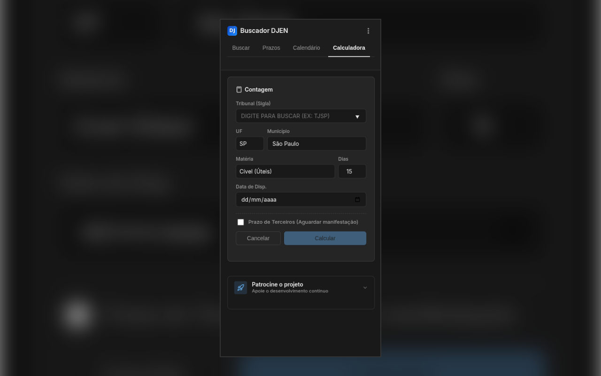
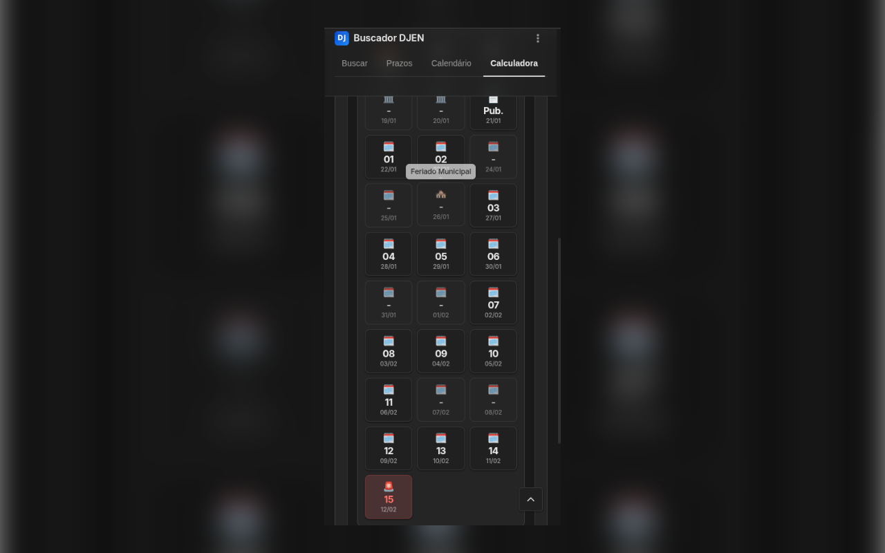
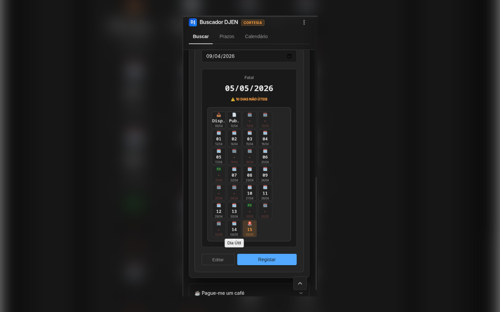
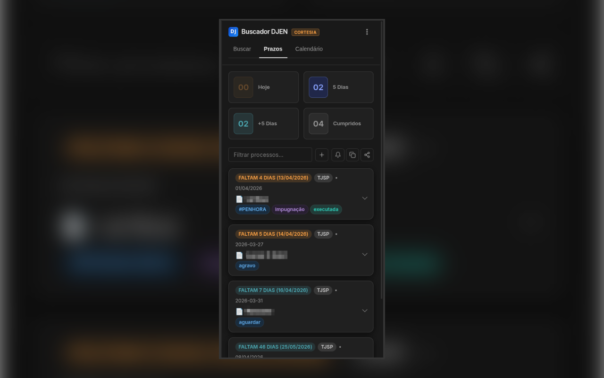
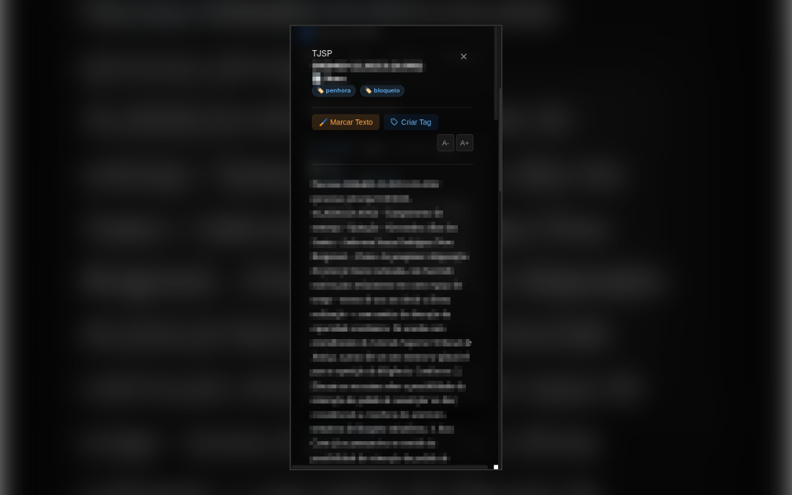
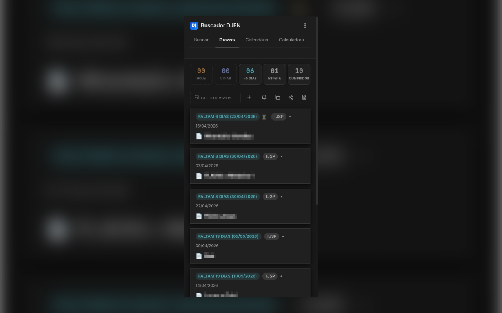
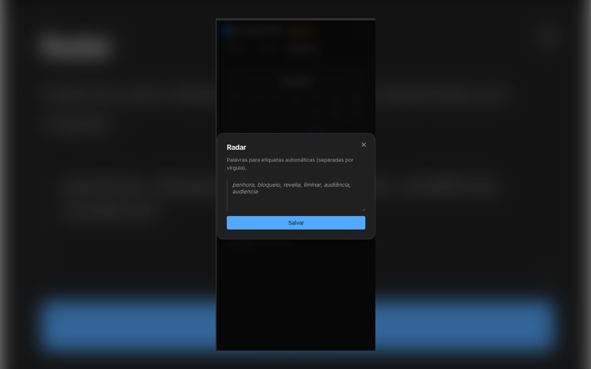
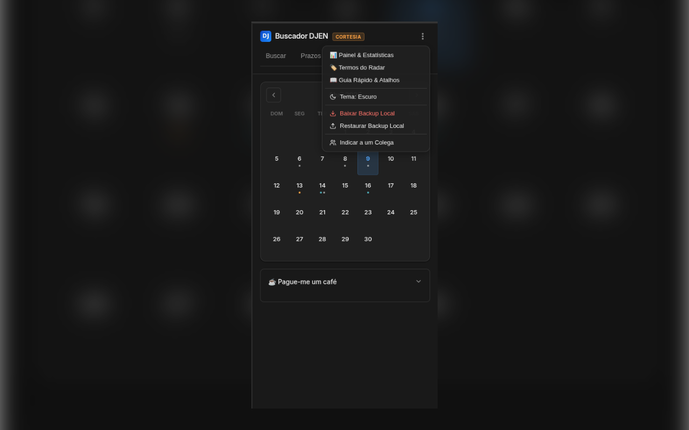

Buscador DJEN
CORTESIA
Buscador DJEN
CORTESIA
Buscador DJEN
CORTESIA
Buscador DJEN
CORTESIA
A forma mais rápida de pesquisar nome no DJEN CNJ. Automatize a consulta de publicações no Diário da Justiça Eletrônico Nacional, calcule prazos processuais e gerencie PJe, eproc e e-SAJ direto do navegador.
Utilize nossa ferramenta web real e gratuita para o cálculo algorítmico de prazos processuais.
Abrir Calculadora de Prazos OnlineExplore a interface abaixo para conhecer o design da extensão ou teste o motor do sistema com uma ferramenta real e gratuita.
Busca rápida por OAB, UF ou número do processo. Extraia dados e publicações instantaneamente, sem bloqueios de captchas ou a lentidão dos portais oficiais.
Contagem precisa em dias úteis ou corridos. O algoritmo desvia automaticamente de feriados, suspensões locais e do recesso forense, garantindo segurança na pauta.
Transforme publicações em tarefas acionáveis. Ative o Modo Foco para analisar despachos longos e complexos em um ambiente de leitura imersivo e livre de distrações.
Monitoramento automático da sua pauta. Configure palavras-chave para que o sistema emita alertas imediatos sempre que identificar termos críticos (como Liminar ou Penhora).
Esqueça os números de 20 dígitos. Atribua apelidos práticos aos seus processos e adicione anotações estratégicas para facilitar a identificação e o controle do seu acervo.
Obtenha uma visão global de todas as intimações e tarefas mensais. Um painel interativo para que a controladoria possa visualizar e antecipar o fluxo de trabalho da semana.
Emita relatórios de auditoria com formatação impecável em Visual Law. Exporte sua base para planilhas CSV para aplicar Jurimetria e extrair métricas de desempenho do contencioso.
Conecte seus prazos diretamente ao Google Agenda com um único clique. Compartilhe rapidamente o andamento dos processos com a equipe ou clientes via WhatsApp e Telegram.
Zero exposição. Seus dados, processos e a agenda da advocacia permanecem criptografados de ponta a ponta, existindo fisicamente apenas na memória do seu próprio computador.










Sem lentidão. Sem mensalidades abusivas. Instale agora e automatize sua rotina.